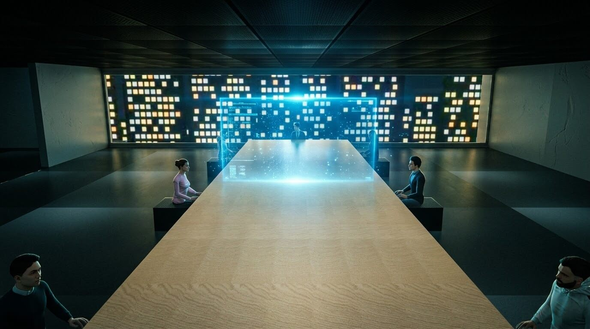
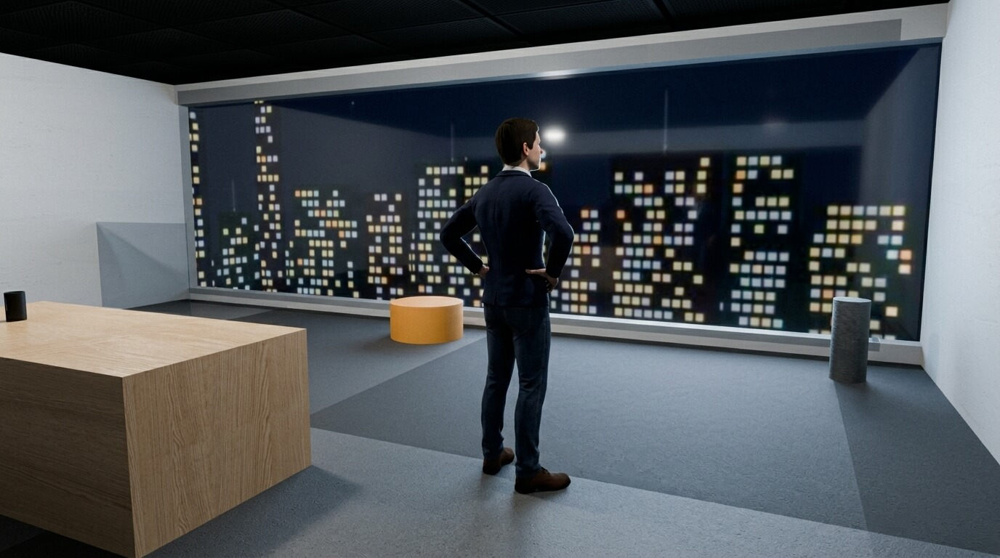
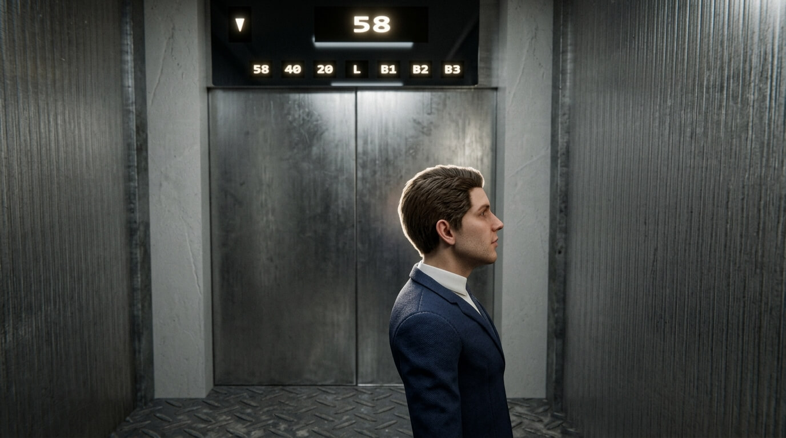

Hawkes Biomedical
PH Origins
Pierce Hawkes sells dominance from the 58th floor. Below the tower, B3 has started writing back.
The tower belongs to Hawkes Biomedical, the parent company.
Act I
One night in the tower

01 — The Apex Peak
Room for Grace
A meeting about market ownership. The basement is the thing nobody puts on the slide.

02 — The glass
Fifty-eight
The board files out. Pierce stays at the window until the next room starts screaming.

03 — B3
The ride down
He does not send a team. The cab drops past the lobby, toward the floor he ordered dark.
The table
Who is in the room
Chairman
Pierce Hawkes
Head of the table. He keeps B3 off the books until the books start keeping him.
Director
Hale
The street, the quarter, the number that dies in public if the basement leaks.
The charter
Voss
Still calls them patients. Pierce has already decided they are the product.
The timeline
Lang
Zurich wants a date. Lang is the one who has to walk in with one.